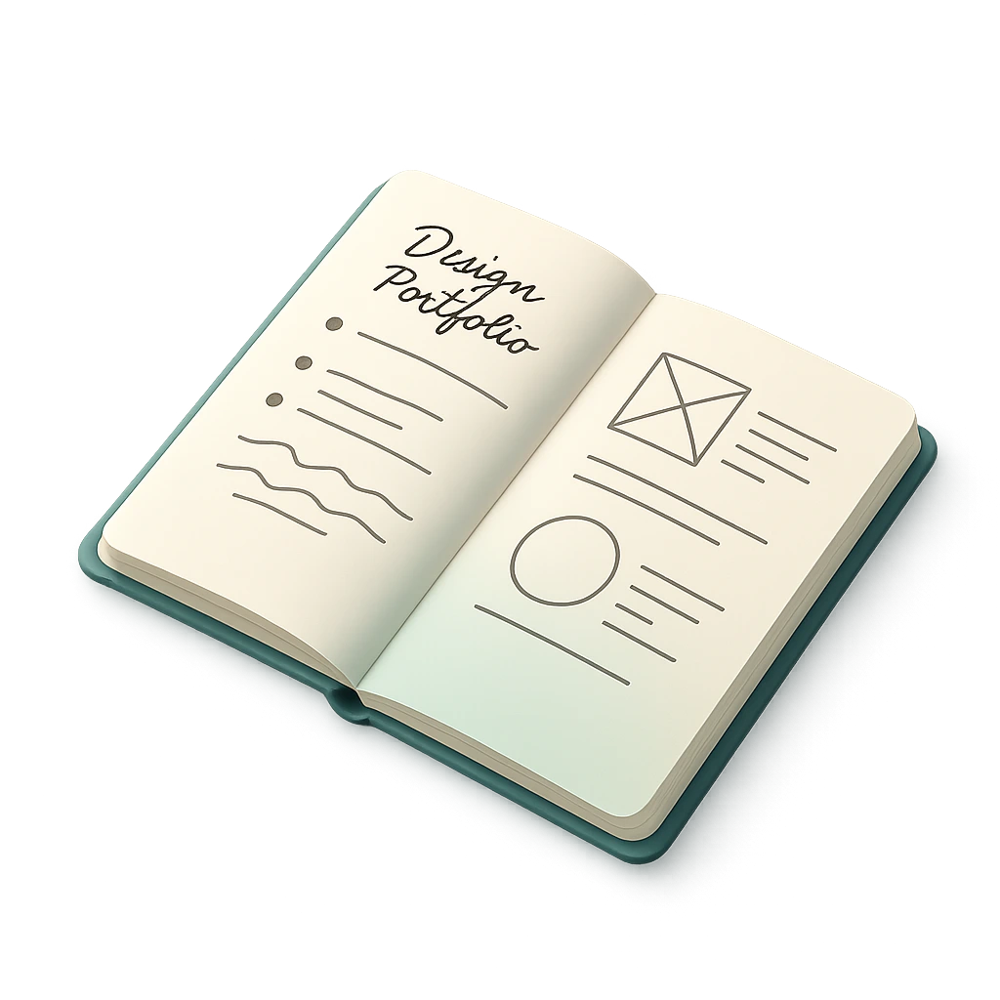
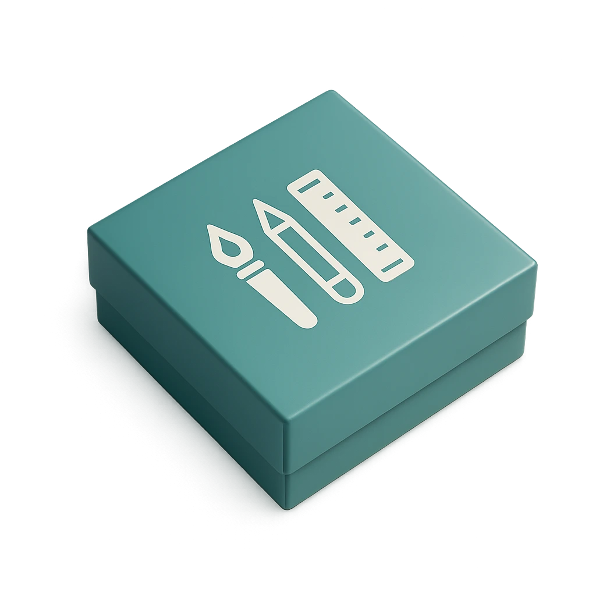

Během své kariéry jsem měl možnost pracovat jako vizuální, UI nebo UX designer na široké škále projektů napříč různými odvětvími:
digitální marketing
e-commerce
foodies
pojišťovnictví
fintech
startupy
pracovní trh
low-code platformy
informační systémy
developerské projekty
Pracoval jsem jak se zavedenými společnostmi, tak i s rychle rostoucími startupy, v asynchronním i synchronním prostředí. Obvykle jsem byl součástí agilních týmů, odpovědný za celý designový proces a později i za jeho uvedení do produkce.

Mám zkušenosti napříč celým designovým procesem – od počátečních fází ideací, přes výzkum, uživatelské studie, testování a iterace, až po finální prototypy a materiály pro předání vývojovému týmu. To zahrnuje vše od přesně definovaných stylů a komponent až po detailní specifikace funkcí a chování jednotlivých elementů.
UX Research
UI Design
Prototyping
Design Systems
User Testing
Informační architektura
Interakční design
Vizuální design
Vibe Coding
AI generovaný design
Propracoval jsem se k velkým projektům, kde měsíční návštěvnost dosahuje milionů uživatelů a roční obrat je v miliardách. Tato cesta mi dala nejvíce zkušeností, pokud jde o škálovatelnost a udržitelnost designu, včetně hlubšího porozumění design systémů a jejich implementaci do produktů.

Zajímavé je, že jsem často působil v okamžiku procesu redesignu produktů a značek.